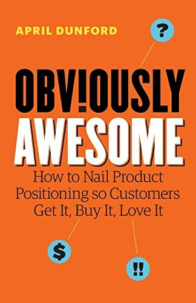

Library › Business & Startups
Obviously Awesome: How to Get Product Positioning Right — Summary & Key Lessons

Positioning isn't a tagline. It's the context that decides whether your product looks like a miracle or a mistake.
📖 OPEN THE FULL INTERACTIVE BREAKDOWN →🌐 Read it in Hindi, Hinglish, Gujarati, Tamil & 22 more languages — free, with audio.
💡 The Big Idea
Dunford (who has positioned dozens of products) reframes positioning as context-setting: the market needs a frame of reference to value your product, and if you don't set it, customers set it wrong (usually against your worst comparison). Her 10-step method: list your real competitive alternatives (including do-nothing), catalog your secret sauce (what you have that alternatives don't), map attributes to value, pick the customers who care most, and CHOOSE your market frame (the category you compete in: comparing a spreadsheet against Excel vs against a database produces opposite verdicts). The book's war stories: products that were 'failing' until re-framed (a database sold as an Excel-killer dying, reborn as a data warehouse thriving), and the tells that you have a positioning problem (customers love demos but don't buy, sales keeps winning the wrong deals, pricing feels arbitrary).
🧠 The 8 Key Lessons
Lesson 1: Customers Judge You Against Whatever Frame They Bring
Context Is Everything
No product is judged in a vacuum: buyers compare it to the nearest thing they know. Your value is therefore determined by the comparison set: the same product reads as slow (vs native apps), expensive (vs spreadsheets), or cheap (vs consultants) depending on frame. Founders who leave the frame unset get the market's default frame, usually the worst one. The discipline: choose the frame where your strengths are the evaluation criteria.
📖 Example: A database product struggling as a 'better database' (compared to Oracle on features) re-framed as a 'data warehouse alternative' (compared on cost and time-to-insight) and exploded, same product, new scoreboard. Read the full example →
⚡ Do this: Write the comparison set your last five lost deals used. If those comparisons favor your weaknesses, you have a positioning problem, not a product problem.
Lesson 2: Start From Real Competitive Alternatives (Including Do-Nothing)
What Else Would They Do?
Dunford's first step: list what customers ACTUALLY do today instead of your product: spreadsheets, agencies, interns, nothing. Founders list competitors (other startups) and miss the do-nothing alternative that wins most often. The honest list of alternatives determines which of your features is actually differentiated, because a feature every alternative also has isn't a feature, it's table stakes.
📖 Example: A SaaS team discovered their real competitor was two interns with Excel: reframing value around error-rates and audit trails (things interns can't do) beat the 'faster than the rival SaaS' pitch that was losing. Read the full example →
⚡ Do this: Write your true alternative list, starting with 'do nothing' and 'manual workaround'. Rank your features by whether they exist in ANY alternative; only the absent ones can carry your pitch.
Lesson 3: Secret Sauce: What You Have That Others Can't Cheaply Copy
The Attributes Exercise
Step two: catalog your unique attributes (capabilities, data, integrations, expertise) that alternatives lack, then trace each to a concrete customer value. Founders skip this because their sauce feels obvious; buyers can't see it because nobody framed it. The output is a value-claim inventory that positioning, pricing and sales decks all draw from.
📖 Example: A boring-sounding infrastructure tool hid its sauce in deployment speed (hours versus weeks); once framed as 'time-to-value' rather than feature comparison, pricing jumped because the buyer's alternative was a consulting project. Read the full example →
⚡ Do this: List five things about your product that competitors cannot replicate easily. Attach one quantified customer value to each; anything without a value becomes a footnote, not a headline.
Lesson 4: Pick the Customers Who Care Most
Best-Fit Segments
The same value matters differently across segments: speed obsesses agencies, accuracy obsesses banks. Positioning forces a choice: lead with the value your BEST-FIT customers care most about, not the average of everyone. Selling to everyone dilutes the frame into mush ('productivity platform for everyone') that sells to no one.
📖 Example: Book examples repeatedly show a 'failing' product with a passionate niche: narrowing the frame to the segment that cared most (and saying so out loud) grew sales while shrinking the addressable market on paper. Read the full example →
⚡ Do this: Identify your last 10 happiest customers' common trait. Write your positioning AS IF selling only to them, and test the new pitch on the next 10 prospects who match.
Lesson 5: Choose Your Market Category Deliberately
The Frame Decision
The highest-leverage choice: what category do you compete in (each category carries its own comparison set, budget line, and buyer)? Categories can be borrowed (ride the familiar frame), sub-categorized (add a modifier that highlights your strength) or created (expensive, slow, only when you must). Founders often inherit their category from journalists or analysts who guessed wrong.
📖 Example: Products repositioned as 'X for Y-industry' or 'X without Y-pain' sub-categorize their way out of brutal comparisons: the frame does the selling before the demo starts. Read the full example →
⚡ Do this: Write the category you THINK you're in, then rewrite what category would make your unique attributes the evaluation criteria. Test the second frame on your next five pitches.
Lesson 6: The Tells: How to Know Your Positioning Is Broken
Symptoms
Dunford's diagnostic list: demos get great reactions but deals don't close; close rates are fine but onboarding churns (wrong customers); pricing conversations feel arbitrary; sales keeps asking for custom slides; your product wins when compared to X but loses when compared to Y. Each tell points to a frame the product didn't choose. Diagnosis beats redesign: most 'product problems' on this list are positioning problems wearing a wig.
📖 Example: A team about to rebuild their product for enterprise discovered their actual issue: enterprise buyers compared them to legacy suites on legacy criteria; re-positioning (and re-merchandising the pitch) fixed what a rebuild would not. Read the full example →
⚡ Do this: Circle every symptom your business has from Dunford's list. Before touching the product, run the 10-step positioning exercise; measure closes for one quarter after.
Lesson 7: Positioning Is Temporary by Design
Revisit on Triggers
Positioning is not eternal: it should be revisited on triggers (mature/saturated category, new competitor with different strengths, market trend shifting value, your product's capabilities leaping). Dunford schedules positioning reviews like financial audits. The discipline: what got you traction early (the scrappy frame) can cap you later (the enterprise frame); clinging to old positioning is nostalgia priced in lost deals.
📖 Example: Companies that started as 'cheap alternative' frames found the frame itself blocked premium pricing years later, requiring a deliberate, painful re-frame their competitors had already made. Read the full example →
⚡ Do this: Put a standing quarterly agenda item: does our positioning still match our strengths and our buyers? One hour, real answer, one experiment.
Lesson 8: Positioning Is a Team Sport That Starts With the Founder
Making It Stick
The final craft: positioning must be socialized (the whole company can state the frame, the alternatives, the value) or it decays into slide decoration. Dunford's method ends with the founder telling the story until sales, product and marketing repeat it unprompted. The test of positioning is not the deck; it's what a support rep says when a customer asks 'why should I pick you over the alternative?'
📖 Example: Teams that rehearsed the frame (alternatives, sauce, value, category) in onboarding and sales enablement showed consistent messaging across every touchpoint, which buyers experience as clarity and trust. Read the full example →
⚡ Do this: Quiz three random employees this week: who's your alternative, what's your sauce, what category are you in? Whatever answer surprises you is your next internal workshop.
✅ 5-Step Action Plan
- Write your true alternative list starting with do-nothing and manual workarounds.
- Catalog five unique attributes and attach one quantified value to each.
- Write positioning for your best-fit segment only, and test it on the next 10 pitches.
- Choose your market category deliberately; test the frame that makes your strengths the criteria.
- Quiz random employees on the frame monthly; socialize until repetition is boring.
⚠️ When This Doesn't Work
Dunford's examples come from her consulting portfolio (names often anonymized), so claims of positioning wins are her case selection; the method is practice-tested but not academic research. B2B-heavy examples translate imperfectly to consumer virality plays. Read it as the shortest useful book on positioning you'll find, and pair it with the linked case study for the most expensive positioning failure in hardware history.
💀 The Graveyard Proves It
🥤 Juicero — The $400 Wi-Fi Juicer Beaten by Human Hands. Burn: $120M in funding. Read the full case study →
💬 Best Quotes from Obviously Awesome: How to Get Product Positioning Right
- “Positioning is the act of deliberately defining the context so your value is obvious.”
- “Your prospects can't value what they can't compare.”
- “If your product feels 'hard to explain', the problem is almost never the product. It's the frame.”
Interactive version: mark lessons as read, listen in your language, share quote cards.